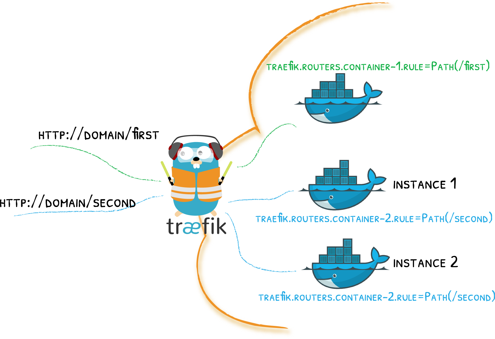

Traefik & Docker¶
A Story of Labels & Containers

Attach labels to your containers and let Traefik do the rest!
Traefik works with both Docker (standalone) Engine and Docker Swarm Mode.
The Quick Start Uses Docker
If you haven't already, maybe you'd like to go through the quick start that uses the docker provider!
Configuration Examples¶
Configuring Docker & Deploying / Exposing Services
Enabling the docker provider
[providers.docker]providers:
docker: {}--providers.docker=trueAttaching labels to containers (in your docker compose file)
version: "3"
services:
my-container:
# ...
labels:
- traefik.http.routers.my-container.rule=Host(`mydomain.com`)Configuring Docker Swarm & Deploying / Exposing Services
Enabling the docker provider (Swarm Mode)
[providers.docker]
# swarm classic (1.12-)
# endpoint = "tcp://127.0.0.1:2375"
# docker swarm mode (1.12+)
endpoint = "tcp://127.0.0.1:2377"
swarmMode = trueproviders:
docker:
# swarm classic (1.12-)
# endpoint = "tcp://127.0.0.1:2375"
# docker swarm mode (1.12+)
endpoint: "tcp://127.0.0.1:2375"
swarmMode: true--providers.docker.endpoint=tcp://127.0.0.1:2375
--providers.docker.swarmMode=trueAttach labels to services (not to containers) while in Swarm mode (in your docker compose file)
version: "3"
services:
my-container:
deploy:
labels:
- traefik.http.routers.my-container.rule=Host(`mydomain.com`)
- traefik.http.services.my-container-service.loadbalancer.server.port=8080Routing Configuration¶
When using Docker as a provider, Trafik uses container labels to retrieve its routing configuration.
See the list of labels in the dedicated routing section.
Routing Configuration with Labels¶
By default, Traefik watches for container level labels on a standalone Docker Engine.
When using Docker Compose, labels are specified by the directive
labels from the
"services" objects.
Not Only Docker
Please note that any tool like Nomad, Terraform, Ansible, etc. that is able to define a Docker container with labels can work with Traefik & the Docker provider.
Port Detection¶
Traefik retrieves the private IP and port of containers from the Docker API.
Ports detection works as follows:
- If a container exposes only one port, then Traefik uses this port for private communication.
- If a container exposes multiple ports,
or does not expose any port, then you must manually specify which port Traefik should use for communication
by using the label
traefik.http.services.<service_name>.loadbalancer.server.port(Read more on this label in the dedicated section in routing).
Docker API Access¶
Traefik requires access to the docker socket to get its dynamic configuration.
You can specify which Docker API Endpoint to use with the directive endpoint.
Security Note
Accessing the Docker API without any restriction is a security concern: If Traefik is attacked, then the attacker might get access to the underlying host.
As explained in the Docker documentation: (Docker Daemon Attack Surface page):
Quote
[...] only trusted users should be allowed to control your Docker daemon [...]
Solutions
Expose the Docker socket over TCP, instead of the default Unix socket file. It allows different implementation levels of the AAA (Authentication, Authorization, Accounting) concepts, depending on your security assessment:
- Authentication with Client Certificates as described in "Protect the Docker daemon socket."
- Authorize and filter requests to restrict possible actions with the TecnativaDocker Socket Proxy.
- Authorization with the Docker Authorization Plugin Mechanism
- Accounting at networking level, by exposing the socket only inside a Docker private network, only available for Traefik.
- Accounting at container level, by exposing the socket on a another container than Traefik's. With Swarm mode, it allows scheduling of Traefik on worker nodes, with only the "socket exposer" container on the manager nodes.
- Accounting at kernel level, by enforcing kernel calls with mechanisms like SELinux, to only allows an identified set of actions for Traefik's process (or the "socket exposer" process).
More Resources and Examples
- "Paranoid about mounting /var/run/docker.sock?"
- Traefik and Docker: A Discussion with Docker Captain, Bret Fisher
- KubeCon EU 2018 Keynote, Running with Scissors, from Liz Rice
- Don't expose the Docker socket (not even to a container)
- A thread on Stack Overflow about sharing the
/var/run/docker.sockfile - To DinD or not to DinD
- Traefik issue GH-4174 about security with Docker socket
- Inspecting Docker Activity with Socat
- Letting Traefik run on Worker Nodes
- Docker Socket Proxy from Tecnativa
Docker Swarm Mode¶
To enable Docker Swarm (instead of standalone Docker) as a configuration provider,
set the swarmMode directive to true.
Routing Configuration with Labels¶
While in Swarm Mode, Traefik uses labels found on services, not on individual containers.
Therefore, if you use a compose file with Swarm Mode, labels should be defined in the
deploy part of your service.
This behavior is only enabled for docker-compose version 3+ (Compose file reference).
Port Detection¶
Docker Swarm does not provide any port detection information to Traefik.
Therefore you must specify the port to use for communication by using the label traefik.http.services.<service_name>.loadbalancer.server.port
(Check the reference for this label in the routing section for Docker).
Docker API Access¶
Docker Swarm Mode follows the same rules as Docker API Access.
As the Swarm API is only exposed on the manager nodes, you should schedule Traefik on the Swarm manager nodes by default, by deploying Traefik with a constraint on the node's "role":
docker service create \
--constraint=node.role==manager \
#... \version: '3'
services:
traefik:
# ...
deploy:
placement:
constraints:
- node.role == managerScheduling Traefik on Worker Nodes
Following the guidelines given in the previous section "Docker API Access", if you expose the Docker API through TCP, then Traefik can be scheduled on any node if the TCP socket is reachable.
Please consider the security implications by reading the Security Note.
A good example can be found on Bret Fisher's repository.
Provider Configuration¶
endpoint¶
Required, Default="unix:///var/run/docker.sock"
[providers.docker]
endpoint = "unix:///var/run/docker.sock"providers:
docker:
endpoint: "unix:///var/run/docker.sock"--providers.docker.endpoint=unix:///var/run/docker.sockSee the sections Docker API Access and Docker Swarm API Access for more information.
Using the docker.sock
The docker-compose file shares the docker sock with the Traefik container
version: '3'
services:
traefik:
image: traefik:v2.0 # The official v2.0 Traefik docker image
ports:
- "80:80"
volumes:
- /var/run/docker.sock:/var/run/docker.sockWe specify the docker.sock in traefik's configuration file.
[providers.docker]
endpoint = "unix:///var/run/docker.sock"
# ...providers:
docker:
endpoint: "unix:///var/run/docker.sock"
# ...--providers.docker.endpoint=unix:///var/run/docker.sock
# ...useBindPortIP¶
Optional, Default=false
[providers.docker]
useBindPortIP = true
# ...providers:
docker:
useBindPortIP: true
# ...--providers.docker.useBindPortIP=true
# ...Traefik routes requests to the IP/Port of the matching container.
When setting useBindPortIP=true, you tell Traefik to use the IP/Port attached to the container's binding instead of its inner network IP/Port.
When used in conjunction with the traefik.http.services.<name>.loadbalancer.server.port label (that tells Traefik to route requests to a specific port),
Traefik tries to find a binding on port traefik.http.services.<name>.loadbalancer.server.port.
If it can't find such a binding, Traefik falls back on the internal network IP of the container,
but still uses the traefik.http.services.<name>.loadbalancer.server.port that is set in the label.
Examples of usebindportip in different situations.
| port label | Container's binding | Routes to |
|---|---|---|
| - | - | IntIP:IntPort |
| - | ExtPort:IntPort | IntIP:IntPort |
| - | ExtIp:ExtPort:IntPort | ExtIp:ExtPort |
| LblPort | - | IntIp:LblPort |
| LblPort | ExtIp:ExtPort:LblPort | ExtIp:ExtPort |
| LblPort | ExtIp:ExtPort:OtherPort | IntIp:LblPort |
| LblPort | ExtIp1:ExtPort1:IntPort1 & ExtIp2:LblPort:IntPort2 | ExtIp2:LblPort |
In the above table:
ExtIpstands for "external IP found in the binding"IntIpstands for "internal network container's IP",ExtPortstands for "external Port found in the binding"IntPortstands for "internal network container's port."
exposedByDefault¶
Optional, Default=true
[providers.docker]
exposedByDefault = false
# ...providers:
docker:
exposedByDefault: false
# ...--providers.docker.exposedByDefault=false
# ...Expose containers by default through Traefik.
If set to false, containers that don't have a traefik.enable=true label will be ignored from the resulting routing configuration.
See also Restrict the Scope of Service Discovery.
network¶
Optional, Default=empty
[providers.docker]
network = "test"
# ...providers:
docker:
network: test
# ...--providers.docker.network=test
# ...Defines a default docker network to use for connections to all containers.
This option can be overridden on a container basis with the traefik.docker.network label.
defaultRule¶
Optional, Default=Host(`{{ normalize .Name }}`)
[providers.docker]
defaultRule = "Host(`{{ .Name }}.{{ index .Labels \"customLabel\"}}`)"
# ...providers:
docker:
defaultRule: "Host(`{{ .Name }}.{{ index .Labels \"customLabel\"}}`)"
# ...--providers.docker.defaultRule=Host(`{{ .Name }}.{{ index .Labels \"customLabel\"}}`)
# ...For a given container if no routing rule was defined by a label, it is defined by this defaultRule instead.
It must be a valid Go template,
augmented with the sprig template functions.
The container service name can be accessed as the Name identifier,
and the template has access to all the labels defined on this container.
swarmMode¶
Optional, Default=false
[providers.docker]
swarmMode = true
# ...providers:
docker:
swarmMode: true
# ...--providers.docker.swarmMode=true
# ...Activates the Swarm Mode (instead of standalone Docker).
swarmModeRefreshSeconds¶
Optional, Default=15
[providers.docker]
swarmModeRefreshSeconds = "30s"
# ...providers:
docker:
swarmModeRefreshSeconds: "30s"
# ...--providers.docker.swarmModeRefreshSeconds=30s
# ...Defines the polling interval (in seconds) in Swarm Mode.
constraints¶
Optional, Default=""
[providers.docker]
constraints = "Label(`a.label.name`,`foo`)"
# ...providers:
docker:
constraints: "Label(`a.label.name`,`foo`)"
# ...--providers.docker.constraints=Label(`a.label.name`,`foo`)
# ...Constraints is an expression that Traefik matches against the container's labels to determine whether to create any route for that container. That is to say, if none of the container's labels match the expression, no route for the container is created. If the expression is empty, all detected containers are included.
The expression syntax is based on the Label("key", "value"), and LabelRegex("key", "value") functions, as well as the usual boolean logic, as shown in examples below.
Constraints Expression Examples
# Includes only containers having a label with key `a.label.name` and value `foo`
constraints = "Label(`a.label.name`, `foo`)"# Excludes containers having any label with key `a.label.name` and value `foo`
constraints = "!Label(`a.label.name`, `value`)"# With logical AND.
constraints = "Label(`a.label.name`, `valueA`) && Label(`another.label.name`, `valueB`)"# With logical OR.
constraints = "Label(`a.label.name`, `valueA`) || Label(`another.label.name`, `valueB`)"# With logical AND and OR, with precedence set by parentheses.
constraints = "Label(`a.label.name`, `valueA`) && (Label(`another.label.name`, `valueB`) || Label(`yet.another.label.name`, `valueC`))"# Includes only containers having a label with key `a.label.name` and a value matching the `a.+` regular expression.
constraints = "LabelRegex(`a.label.name`, `a.+`)"See also Restrict the Scope of Service Discovery.
tls¶
Optional
tls.ca¶
Certificate Authority used for the secured connection to Docker.
[providers.docker.tls]
ca = "path/to/ca.crt"providers:
docker:
tls:
ca: path/to/ca.crt--providers.docker.tls.ca=path/to/ca.crttls.caOptional¶
Policy followed for the secured connection with TLS Client Authentication to Docker.
Requires tls.ca to be defined.
true: VerifyClientCertIfGivenfalse: RequireAndVerifyClientCert- if
tls.cais undefined NoClientCert
[providers.docker.tls]
caOptional = trueproviders:
docker:
tls:
caOptional: true--providers.docker.tls.caOptional=truetls.cert¶
Public certificate used for the secured connection to Docker.
[providers.docker.tls]
cert = "path/to/foo.cert"
key = "path/to/foo.key"providers:
docker:
tls:
cert: path/to/foo.cert
key: path/to/foo.key--providers.docker.tls.cert=path/to/foo.cert
--providers.docker.tls.key=path/to/foo.keytls.key¶
Private certificate used for the secured connection to Docker.
[providers.docker.tls]
cert = "path/to/foo.cert"
key = "path/to/foo.key"providers:
docker:
tls:
cert: path/to/foo.cert
key: path/to/foo.key--providers.docker.tls.cert=path/to/foo.cert
--providers.docker.tls.key=path/to/foo.keytls.insecureSkipVerify¶
If insecureSkipVerify is true, TLS for the connection to Docker accepts any certificate presented by the server and any host name in that certificate.
[providers.docker.tls]
insecureSkipVerify = trueproviders:
docker:
tls:
insecureSkipVerify: true--providers.docker.tls.insecureSkipVerify=true